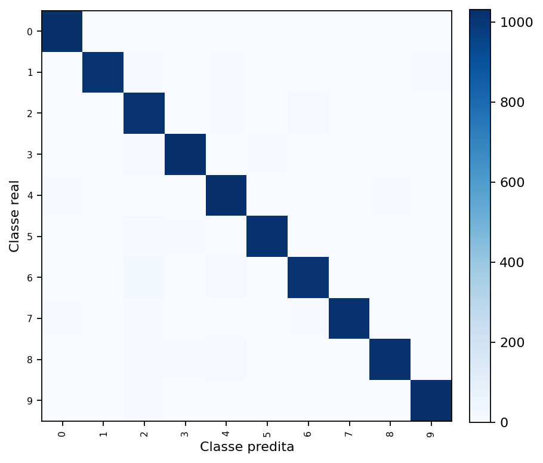
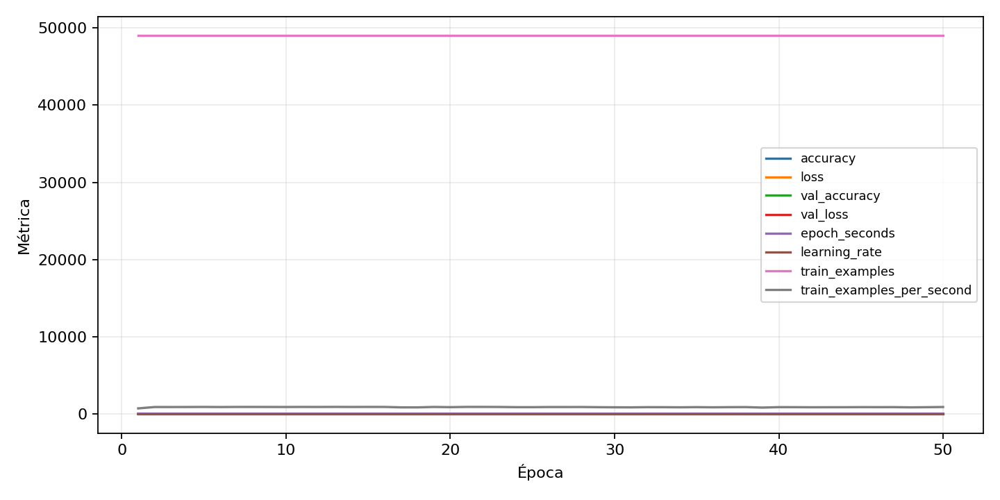

| n_samples | 10500 |
|---|---|
| loss | 0.1399644911289215 |
| accuracy | 0.9737142857142858 |
| balanced_accuracy | 0.9737142857142856 |
| macro_f1 | 0.9737531882599697 |


| Índice | Classe | Suporte | Precisão | Recall | F1 |
|---|---|---|---|---|---|
| 0 | 0 | 1050 | 0.9809885931558935 | 0.9828571428571429 | 0.9819219790675547 |
| 1 | 1 | 1050 | 0.9854368932038835 | 0.9666666666666667 | 0.9759615384615385 |
| 2 | 2 | 1050 | 0.9425925925925925 | 0.9695238095238096 | 0.955868544600939 |
| 3 | 3 | 1050 | 0.9771428571428571 | 0.9771428571428571 | 0.9771428571428571 |
| 4 | 4 | 1050 | 0.9570093457943926 | 0.9752380952380952 | 0.9660377358490567 |
| 5 | 5 | 1050 | 0.988394584139265 | 0.9733333333333334 | 0.980806142034549 |
| 6 | 6 | 1050 | 0.9712643678160919 | 0.9657142857142857 | 0.9684813753581661 |
| 7 | 7 | 1050 | 0.976145038167939 | 0.9742857142857143 | 0.9752144899904671 |
| 8 | 8 | 1050 | 0.9779482262703739 | 0.9714285714285714 | 0.9746774964166268 |
| 9 | 9 | 1050 | 0.9818875119161106 | 0.9809523809523809 | 0.981419723677942 |
{"adapter":"kmnist","balance_mode":"all_raw","class_names":["0","1","2","3","4","5","6","7","8","9"],"dataset":"kmnist","dataset_options":{},"dataset_root":"/home/msduda/datasets-tcc/kmnist","native_channels":1,"normalization":"unit_interval","num_classes":10,"protocol":{"checkpoint_monitor":"val_macro_f1","dtype_policy":"mixed_float16","early_stopping":{"patience":50,"restore_best_weights":true},"evaluation_augmentation":false,"input_channels":"native","optimizer":"Adam","pretrained_weights":false,"reduce_lr_on_plateau":{"factor":0.3,"min_lr":1e-07,"patience":50},"resize":"proportional_padding","test_time_augmentation":false,"training_from_scratch":true},"seed":42,"source_fingerprint":"8928d478d8d23938a73b4f4a92c407bf3d74beff1e0e67e3644d6ecdc30cf828","source_manifest":{"class_names":["0","1","2","3","4","5","6","7","8","9"],"joined_samples":70000,"metadata":{"layout":"kmnist-component-npz"},"name":"kmnist","native_channels":1,"source_path":"/home/msduda/datasets-tcc/kmnist","splits":{"test":10000,"train":60000},"target_size":64},"target_size":64,"test_fraction":0.15,"train_fraction":0.7,"training":{"augmentation":{"brightness_delta":0.0,"contrast_lower":1.0,"contrast_upper":1.0,"cutout_max_frac":0.0,"cutout_prob":0.0,"flip_lr":false,"noise_std":0.0,"translate_frac":0.0,"zoom_max":1.0,"zoom_min":1.0},"batch_size":384,"default_image_size":64,"dtype_policy":"mixed_float16","early_stopping_patience":50,"extra_fraction":0.0,"image_size_overrides":{"gtsrb":128},"keras_verbose":1,"learning_rate":0.0003,"max_epochs":50,"preprocess_cache_max_mib":0,"reduce_lr_factor":0.3,"reduce_lr_min_lr":1e-07,"reduce_lr_patience":50,"shuffle_buffer_max_mib":0},"validation_fraction":0.15}
{"epochs_completed":50,"epochs_recorded":50,"evaluation_seconds":18.819647242999054,"fit_seconds_current_attempt":3229.7282079599972,"max_epoch_seconds":66.37927633299842,"max_epochs":50,"mean_epoch_seconds":54.40685502974026,"mean_train_examples_per_second":901.7925340948482,"median_train_examples_per_second":902.6566401945996,"min_epoch_seconds":52.5358533930048,"selected_checkpoint":"/mnt/e/tcc-benchmark/outputs/kmnist-alldata-noaug-batch-sweep-2026-08-06/batch-384/kmnist/runs/kmnist__unit_interval__all_raw__seed-42/checkpoints/best.keras","total_seconds":2720.3427514870127,"training_seconds":2720.3427514870127,"wall_seconds_current_attempt":3252.259181128}
{"elapsed_seconds":3252.3073711379984,"event_counts":{"data_preparation_end":1,"data_preparation_start":1,"epoch_end":50,"evaluation_end":1,"evaluation_start":1,"fit_end":1,"fit_start":1,"periodic":641,"run_completed":1,"train_start":1},"generated_at":"2026-08-08T03:58:55.232+00:00","gpu_backend":"pynvml","interval_seconds":5.0,"metrics":{"cpu_percent":{"count":699,"max":16.9,"mean":12.987553648068669,"min":0.0,"p50":13.3,"p95":16.2},"disk_data_free_bytes":{"count":699,"max":998271037440.0,"mean":998270971523.113,"min":998270033920.0,"p50":998270971904.0,"p95":998270976000.0},"disk_data_percent":{"count":699,"max":2.7,"mean":2.7,"min":2.7,"p50":2.7,"p95":2.7},"disk_data_total_bytes":{"count":699,"max":1081101176832.0,"mean":1081101176832.0,"min":1081101176832.0,"p50":1081101176832.0,"p95":1081101176832.0},"disk_data_used_bytes":{"count":699,"max":27838787584.0,"mean":27837849980.886982,"min":27837784064.0,"p50":27837849600.0,"p95":27837849600.0},"disk_output_free_bytes":{"count":699,"max":207132811264.0,"mean":207119891401.79684,"min":207118921728.0,"p50":207119785984.0,"p95":207120040345.6},"disk_output_percent":{"count":699,"max":79.3,"mean":79.3,"min":79.3,"p50":79.3,"p95":79.3},"disk_output_total_bytes":{"count":699,"max":1000186310656.0,"mean":1000186310656.0,"min":1000186310656.0,"p50":1000186310656.0,"p95":1000186310656.0},"disk_output_used_bytes":{"count":699,"max":793067388928.0,"mean":793066419254.2031,"min":793053499392.0,"p50":793066524672.0,"p95":793067302912.0},"elapsed_seconds":{"count":699,"max":3252.252879,"mean":1629.1804967010014,"min":0.028696,"p50":1627.443559,"p95":3104.1942784000003},"gpu_count":{"count":699,"max":1.0,"mean":1.0,"min":1.0,"p50":1.0,"p95":1.0},"gpu_memory_percent":{"count":699,"max":53.44381332397461,"mean":52.03252418528981,"min":38.266754150390625,"p50":52.35018730163574,"p95":53.13396453857422},"gpu_memory_total_bytes":{"count":699,"max":8589934592.0,"mean":8589934592.0,"min":8589934592.0,"p50":8589934592.0,"p95":8589934592.0},"gpu_memory_used_bytes":{"count":699,"max":4590788608.0,"mean":4469559794.082975,"min":3287089152.0,"p50":4496846848.0,"p95":4564172800.0},"gpu_temperature_c":{"count":699,"max":53.0,"mean":43.52360515021459,"min":39.0,"p50":43.0,"p95":50.10000000000002},"gpu_utilization_percent":{"count":699,"max":100.0,"mean":25.337625178826894,"min":1.0,"p50":24.0,"p95":57.0},"process_cpu_percent":{"count":699,"max":215.2,"mean":170.39442060085835,"min":0.0,"p50":176.8,"p95":210.2},"process_read_bytes":{"count":699,"max":12173312.0,"mean":12130242.472103003,"min":7933952.0,"p50":12173312.0,"p95":12173312.0},"process_rss_bytes":{"count":699,"max":4255666176.0,"mean":3840697193.1101575,"min":1029804032.0,"p50":3977539584.0,"p95":4231237632.0},"process_vms_bytes":{"count":699,"max":50125066240.0,"mean":49625201943.805435,"min":39581577216.0,"p50":49805193216.0,"p95":49975803904.0},"process_write_bytes":{"count":699,"max":1392640.0,"mean":1375002.0028612304,"min":4096.0,"p50":1392640.0,"p95":1392640.0},"ram_available_bytes":{"count":699,"max":15535681536.0,"mean":12889067572.738197,"min":12472594432.0,"p50":12754235392.0,"p95":13543801651.2},"ram_percent":{"count":699,"max":25.0,"mean":22.443204577968526,"min":6.5,"p50":23.3,"p95":24.8},"ram_total_bytes":{"count":699,"max":16619085824.0,"mean":16619085824.0,"min":16619085824.0,"p50":16619085824.0,"p95":16619085824.0},"ram_used_bytes":{"count":699,"max":4146491392.0,"mean":3730018251.2618027,"min":1083404288.0,"p50":3864850432.0,"p95":4120165171.2}},"sample_count":699,"schema_version":1}